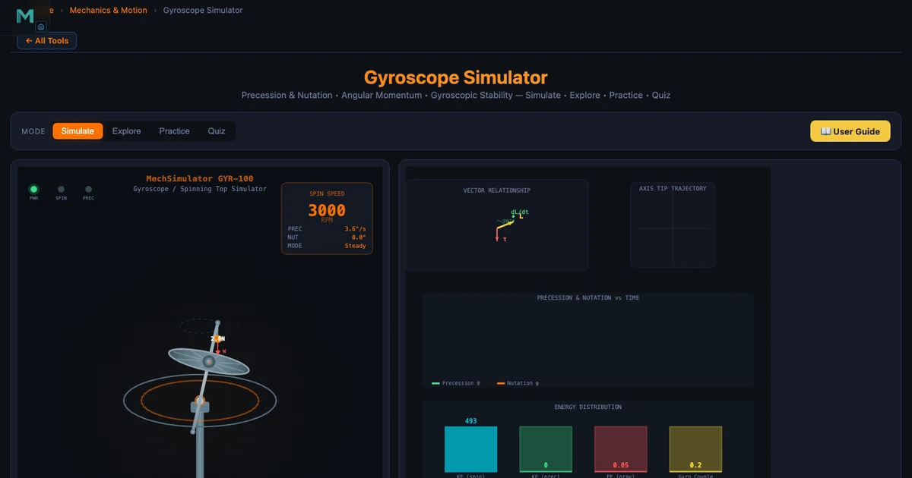
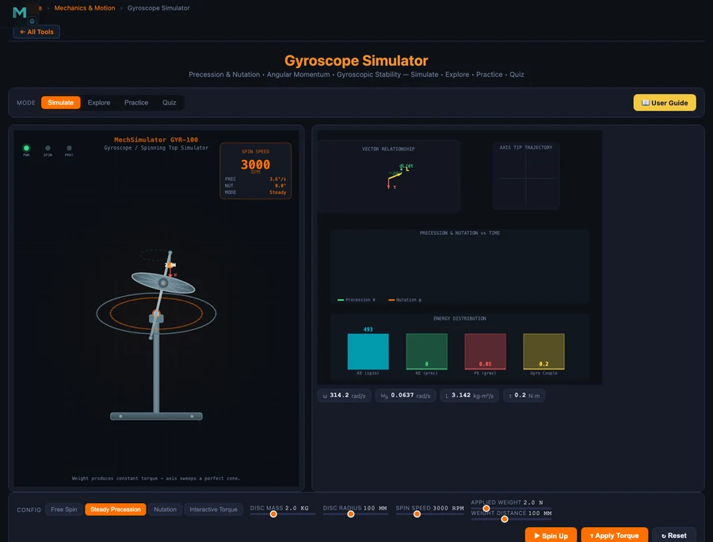

Gyroscope Simulator — Angular Momentum, Precession and Nutation in Physics Lessons

- A gyroscope stores angular momentum L = Iω as a vector along its spin axis; conservation of L is why a spinning gyroscope resists changes to its orientation instead of falling.
- An applied torque changes L perpendicular to itself (the 90° rule, τ = dL/dt), so the axis sweeps sideways and precesses at rate Ωp = τ/(Iω) — faster spin gives slower precession.
- Nutation is a high-frequency wobble (ωn ≈ L/I_support) that appears when a gyroscope is released from rest and quickly damps into smooth steady precession.
There is a moment in every rotational dynamics lesson when the class loses confidence. It usually happens around the third attempt to explain why a spinning gyroscope does not fall when released. The students have the formula. They can substitute numbers. But nobody believes it. A spinning top appears to defy gravity on a table, and no amount of blackboard algebra fully convinces a student who has never held one and felt the resistance in their hand. The Gyroscope Simulator does not replace that physical experience entirely, but it comes closer than anything else available in an online or hybrid physics class.
Why Gyroscopic Physics Is Genuinely Hard to Teach
The difficulty is not the mathematics. Precession rate Ωp = τ/L is a simple formula. The difficulty is that the result violates what students think they know about forces. Apply a downward torque, expect downward motion. That is the intuition from linear mechanics. With a gyroscope, applying a downward torque produces sideways motion — the axis moves perpendicular to the torque direction. This 90° rule is not immediately obvious from the formula; it comes from understanding that torque changes the direction of the angular momentum vector, not just its magnitude.
Without a physical gyroscope to demonstrate this, instructors traditionally draw vector diagrams on the board. Students copy the diagram. Most of them do not internalise it. The simulator changes the dynamic because students can change the spin speed and watch the precession rate change in real time — and crucially, they can see the vector sweep the cone rather than just reading a number.
Angular Momentum — The Core of All Gyroscopic Behaviour
Everything about a gyroscope follows from one equation:
\[L = I \cdot \omega\]
Angular momentum \(L\) (in kg·m²/s) is the product of the moment of inertia \(I\) (how mass is distributed about the spin axis) and the angular velocity \(\omega\) (in rad/s). For a solid disc — the standard gyroscope rotor model:
\[I = \dfrac{1}{2} m R^2\]
Take a disc of mass m = 2 kg and radius R = 0.10 m spinning at 3000 RPM. The moment of inertia and angular momentum are:
\[I = \tfrac{1}{2} \times 2 \times 0.10^2 = 0.01 \text{ kg·m}^2\]
\[\omega = \dfrac{3000 \times 2\pi}{60} = 314.16 \text{ rad/s} \qquad L = 0.01 \times 314.16 = 3.14 \text{ kg·m}^2\text{/s}\]
That value of L is a vector pointing along the spin axis (right-hand rule). Conservation of angular momentum means that without external torque, neither the magnitude nor the direction of L can change. The gyroscope is not defying gravity — it is conserving angular momentum. The simulator makes this vector visible, which is the key insight students need.
Precession — What Actually Happens When Torque is Applied
When a spinning gyroscope is supported at one end of its axle under gravity, the unsupported weight creates a torque:
\[\tau = m \cdot g \cdot d\]
where \(d\) is the distance from the support point to the centre of mass. This torque acts horizontally (because the weight acts vertically on a horizontal moment arm). From Newton’s second law for rotation, \(\tau = dL/dt\), the change in angular momentum \(dL\) is in the direction of \(\tau\) — horizontal, perpendicular to L. So the spin axis rotates horizontally: precession.
The precession rate is:
\[\Omega_p = \dfrac{\tau}{L} = \dfrac{\tau}{I \cdot \omega}\]
For a disc with I = 0.01 kg·m² spinning at 5000 RPM under a gravitational torque τ = 0.2 N·m:
\[\omega = \dfrac{5000 \times 2\pi}{60} = 523.6 \text{ rad/s} \qquad L = 0.01 \times 523.6 = 5.236 \text{ kg·m}^2\text{/s}\]
\[\Omega_p = \dfrac{0.2}{5.236} = 0.0382 \text{ rad/s}\]
Two things are worth pointing out here. First, precession rate is independent of the tilt angle — the cone is swept at constant rate regardless of how far the axis leans. Second, and this surprises most students: faster spin means slower precession. Double ω and Ωp halves. The gyroscope becomes more stable, not more active, as spin increases. The Steady Precession mode in the simulator makes this relationship immediately verifiable: drag the spin speed slider up and watch the axis sweep more slowly.
Nutation — The Wobble That Self-Corrects

Nutation is what students observe when a gyroscope is released from rest rather than already precessing. The axis does not immediately sweep into steady precession — it first dips, then bounces back and oscillates with a high-frequency wobble superimposed on the slower precession. This wobble is nutation.
Nutation arises from a momentary energy imbalance. When released from rest, the system has gravitational potential energy but no precession kinetic energy. The axis falls slightly, then gyroscopic action redirects the motion into a circular path. The result is a cycloid-like path of the axis tip: looping if released from rest, circular if released with exactly the right precession speed already.
The nutation frequency is approximately:
\[\omega_n \approx \dfrac{L}{I_{\text{support}}}\]
For L = 5 kg·m²/s and support moment of inertia I_support = 0.02 kg·m², ωn = 250 rad/s — a very fast wobble. Friction damps this quickly, leaving smooth precession. Students almost never see nutation on physical toy gyroscopes because it damps so fast. The simulator’s Nutation mode slows it to observable speed and shows the axis returning to steady precession, which is the “aha” moment for this topic.
Using the Simulator’s 12 Concept Cards in a Lesson
The Gyroscope Simulator covers 12 concepts across four categories: Fundamentals (angular momentum, moment of inertia, torque & angular acceleration), Gyroscopic Effects (precession, nutation, gyroscopic rigidity), Applications (ship stabilisers, aircraft instruments, bicycle stability, spinning tops), and Advanced (Euler’s equations, gyroscopic couple C = IωΩp).
A 90-minute class can cover the fundamentals and effects categories in full. Here is a sequence that works well.
Opening (10 min). Launch the simulator in Free Spin mode. Ask students: “What happens when I apply a sideways force to the top of a spinning axis?” Let them predict. Then click Apply Torque and show the axis responding perpendicular to the push. Record their surprised reactions — this is the hook.
Angular momentum build (15 min). Open the Angular Momentum concept card. Work through the disc example: m = 2 kg, R = 0.1 m, 3000 RPM → L = 3.14 kg·m²/s. Ask students to compute what happens at 6000 RPM (L doubles to 6.28). Introduce the vector direction via the right-hand rule — curl the fingers of the right hand in the direction of spin, the thumb points along L.
Precession (20 min). Switch to Steady Precession mode. Show the formula and the 5000 RPM example above. Then give students a task: “If we double the spin speed from 5000 to 10000 RPM, what happens to Ωp?” They calculate Ωp = 0.2/10.472 = 0.0191 rad/s — it halves. Then drag the slider and confirm. The formula and the animation agree, and that agreement is the lesson.
Applications (20 min). Cover ship stabilisers and aircraft instruments. A ship stabiliser flywheel with I = 500 kg·m² at 600 RPM produces gyroscopic couple C = 500 × 62.83 × 0.1 = 3142 N·m against 0.1 rad/s roll. This is an engineering context students find compelling: the reason cruise ships barely rock is rotational physics.
For a complementary look at how angular momentum connects to oscillatory motion, the Vibrations and Spring-Mass-Damper guide shows how rotational inertia feeds into natural frequency calculations.
Try These Free Physics Simulators
All tools below are free — no account, no download, runs in any browser.
Key Takeaways
- Angular momentum L = Iω is a vector along the spin axis; its conservation is the physical reason a gyroscope resists orientation change. A 2 kg disc of R = 0.1 m at 3000 RPM has L = 3.14 kg·m²/s.
- Precession rate Ωp = τ/(Iω): for a disc at 5000 RPM with τ = 0.2 N·m, Ωp = 0.0382 rad/s. Doubling spin speed halves precession rate.
- The 90° rule — torque changes L perpendicular to itself — explains why the axis sweeps sideways rather than falling. This is τ = dL/dt applied to a vector, not just a scalar.
- Nutation is a high-frequency wobble that appears on release from rest and damps to smooth precession. The Nutation mode shows this self-correction process that is nearly invisible on physical gyroscopes due to rapid damping.
- Real applications include ship stabilisers (3142 N·m couple from a 500 kg·m² flywheel at 600 RPM), aircraft attitude and heading instruments, and bicycle self-stability from wheel angular momentum.
- The simulator’s 4 modes (Free Spin, Steady Precession, Nutation, Interactive Torque) cover the entire topic from first principles through advanced engineering, making it a complete virtual lab for rotational physics.
Frequently Asked Questions
What is angular momentum and how does a gyroscope demonstrate it?
Angular momentum L = Iω is the rotational analogue of linear momentum — it depends on how mass is distributed (moment of inertia I) and how fast the body spins (angular velocity ω). A gyroscope demonstrates angular momentum conservation directly: once spinning, it resists any change in its spin-axis direction because changing the direction of L requires an external torque. A solid disc of mass 2 kg and radius 0.1 m spinning at 3000 RPM has I = 0.01 kg·m² and L = 3.14 kg·m²/s — large enough to hold its axis stable under moderate external forces.
What is precession and how is the rate calculated?
Precession is the slow rotation of a gyroscope’s spin axis around the vertical when a torque (such as gravity on an offset mass) is applied. The precession rate is Ωp = τ/L = τ/(Iω). For a gyroscope with I = 0.01 kg·m², spinning at 5000 RPM (ω = 523.6 rad/s), under a gravitational torque of 0.2 N·m, the precession rate is Ωp = 0.2/5.236 = 0.0382 rad/s. Faster spin means slower precession — the axis sweeps more slowly as angular momentum grows.
What is nutation and why does it occur?
Nutation is a rapid wobble superimposed on steady precession. It appears when a gyroscope is released from rest under torque — the axis initially dips, then oscillates at a high frequency before friction damps it back to smooth precession. Nutation frequency ωn ≈ L/I_support. It represents an energy exchange between the kinetic energy of precession and the potential energy of axis tilt. The simulator’s Nutation mode shows this self-adjustment process live, which is nearly impossible to observe on a physical gyroscope without specialised slow-motion equipment.
Why does a gyroscope resist tilting rather than falling when released?
This is the famous 90° rule of gyroscopic behaviour. When gravity applies a torque τ downward on the offset axis, the angular momentum vector L changes perpendicular to τ (not parallel to it), so the axis moves sideways rather than downward. Mathematically, dL = τ·dt, and since τ is horizontal and L is along the spin axis, the change dL is horizontal — producing precession rather than tilting. This counterintuitive response is why students often say the gyroscope “defies gravity”, though it is simply obeying Newton’s second law for rotation: τ = dL/dt.
How is gyroscopic precession used in real engineering applications?
Gyroscopic effects appear in many engineering systems. Ship stabilisers use massive spinning flywheels (up to 25 tonnes at 200+ RPM) — when the ship rolls, precession generates a couple opposing the roll, reducing it by up to 95%. Aircraft use three gyroscopic instruments: attitude indicator (vertical spin axis shows pitch and bank), heading indicator (horizontal spin axis provides stable heading reference), and turn coordinator (canted gyro detects yaw rate). The gyroscopic couple C = IωΩp must also be accounted for in propeller shaft and turbine bearing design, since turning the aircraft generates large transverse bearing loads.
Angular momentum and precession are among the most counterintuitive topics in introductory physics. The simulator does not make them easy — but it makes them visible. And visible is most of the battle.
Open the Gyroscope Simulator in Free Spin mode before your next class, apply a torque impulse, and let students predict what the axis will do. They will be wrong. That wrongness is the starting point for genuine understanding.